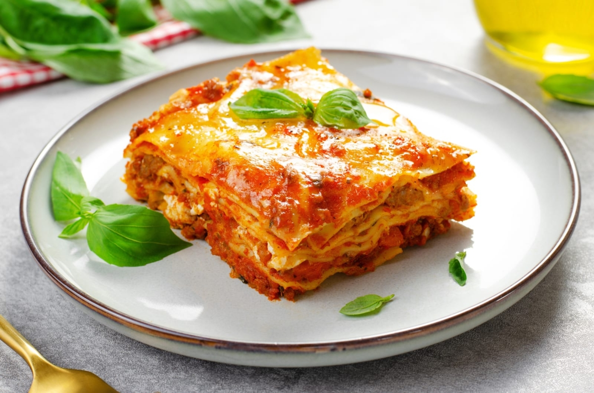

Lasagna

Ingredients
- Poivre
- Sel
- 25 cl. de lait
- 20g. de beurre
- Huile d'Olive
- 6 Tomates
Préparation
- Préparez la sauce tomate dans une grande casserole.
- Pour ceci, hachez un oignon très finement et faites-le revenir avec quelques gouttes d’huile d’olive. Ajoutez à votre préparation les tomates coupées en quatre, préalablement lavées et pelées, avec un peu de sel et de poivre.
- Laissez mijoter 2 heures environ à feu doux, en couvrant une partie de la poêle. N’oubliez pas de remuer de temps en temps et d'ajouter du bouillon au fur et à mesure.
- Pendant ce temps, hachez l'oignon, ainsi que la carotte et le céleri. Placez vos légumes hachés dans une poêle pour les faire revenir avec un peu d’huile d’olive.
Home